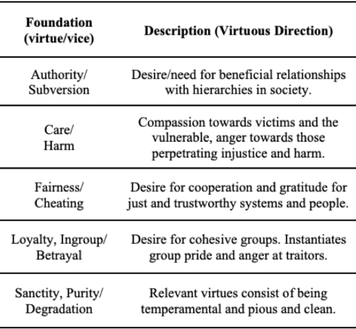
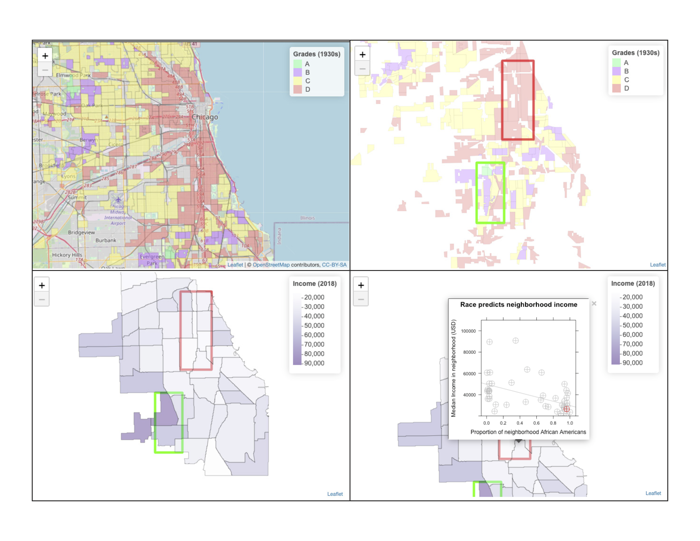

Hunter Priniski,
PhD
Postdoctoral Fellow, UCLA
I'm a data scientist and experimental psychologist studying how the internet, AI, and digital media shapes people's learning and social interactions. My research integrates psychology experiments on individuals and networked groups, computational models of human behavior, open-source software development, and large-scale analyses of social media to understand how psychological mechanisms and networked interactions give rise to shared understanding and group coordination.
I apply this research to develop digital and physical interventions that foster shared narratives and actively advocate for technology and urban development that harnesses — rather than limits — individual and collective agency.
Below are selected research projects highlighting my data science methods, experiments, and theoretical work. This Python notebook on measuring narrative alignment demonstrates the core methodology. Visit the Research Portfolio for additional themes. Full publications on Google Scholar. Reach out: priniski@ucla.edu
Research Highlights

How shared narratives emerge in decentralized online networks — network topology and narrative complexity jointly determine whether groups converge or fragment.

Interdisciplinary research on religion as a system of narrative, belief, and community building — applying data science, urban design, and cognitive psychology.

Data mined from Reddit's Change My View, repurposed into persuasive educational interventions tested on thousands of Americans, demonstrating belief change at scale.
Selected Publications
- Priniski, J.H., et al. (2026). Network structure shapes consensus dynamics through individual decisions. Proceedings of the National Academy of Sciences U.S.A. PNAS
- Priniski, J.H., et al. (2025). Effect-prompting shifts narrative framing of network interactions. Proceedings of the Cognitive Science Society. PDF
- Priniski, J.H., et al. (2024). Online network topology shapes personal narratives and hashtag generation. Proceedings of the Cognitive Science Society. eScholarship
- Priniski, J.H., Verma, I., & Morstatter, F. (2023). Pipeline for modeling causal beliefs from natural language. ACL. ACL
- Priniski, J.H., & Holyoak, K.J. (2022). A darkening spring: How preexisting distrust shaped COVID-19 skepticism. PLOS ONE. PLOS ONE
- Priniski, J.H., McClay, M., & Holyoak, K.J. (2021). Rise of QAnon: A mental model of good versus evil stews in an echo chamber. Proceedings of the Cognitive Science Society. eScholarship